🎬 꽃집 편 H3 — 키프레임 고르기
나머지 7컷을 A/B 두 장씩 뽑았습니다. ⭐가 제 추천입니다. 다르게 고르실 컷만 알려 주세요(예: «4번 B»).
확정: 1번 설정샷 · 3번 도윤이 클로즈업(A)
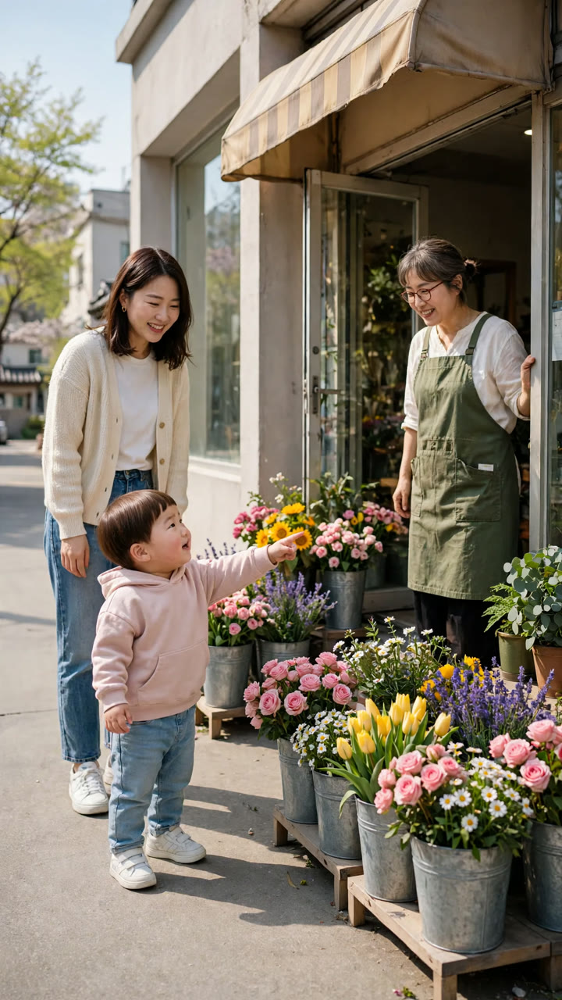

2번 · 이모 «여기는 꽃집이야. 꽃을 팔아.»
A
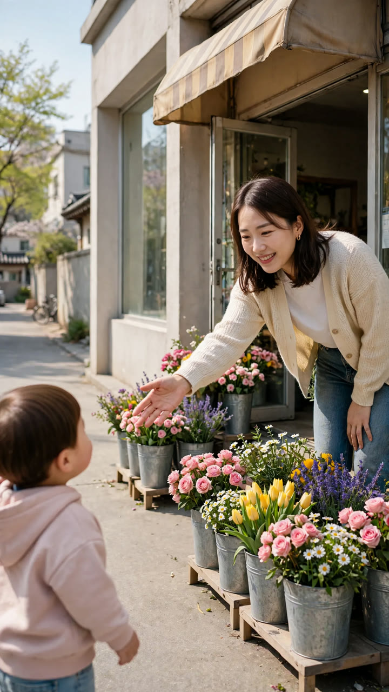
B ⭐
추천 B — B는 이모 얼굴이 더 크게 · 도윤이 뒤통수가 가까이
4번 · 사장님 «귀여운 애기가 왔네~ 뭐 줄까?»
A ⭐
B
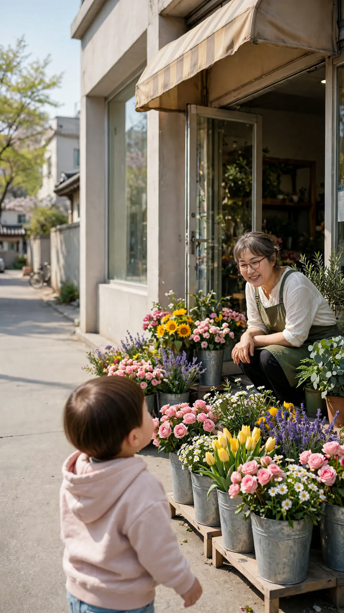
추천 A — 둘 다 비슷 · A가 사장님 자세가 더 반김
5번 · 도윤 «이거 예뻐요. 이거 주세요.»
A ⭐
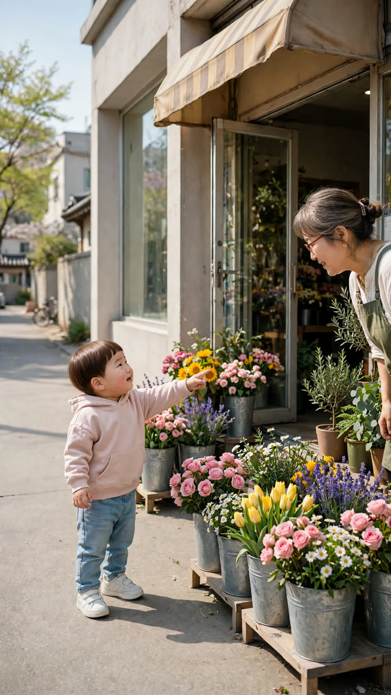
B
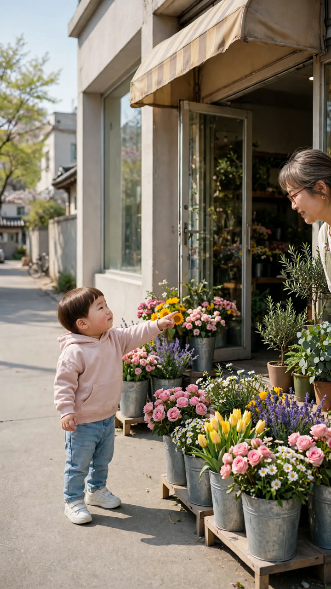
추천 A — B는 사장님 얼굴이 화면 위로 잘림
6번 · 이모 «도윤이 꽃 살 돈 있어요?»
A
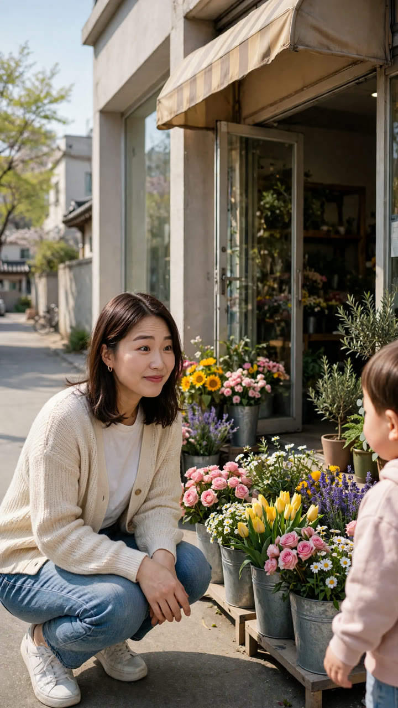
B ⭐
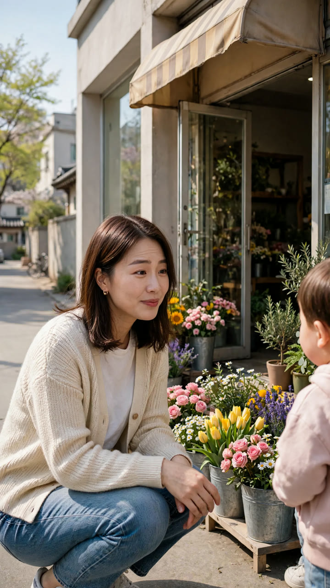
추천 B — B는 도윤이 어깨가 걸려 대화 느낌
7번 · 도윤 «돈은 엄마한테 있는데… 이모 주고 싶은데.»
A ⭐
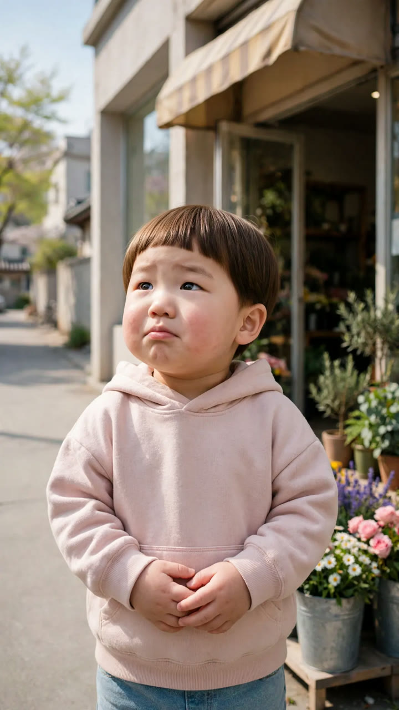
B
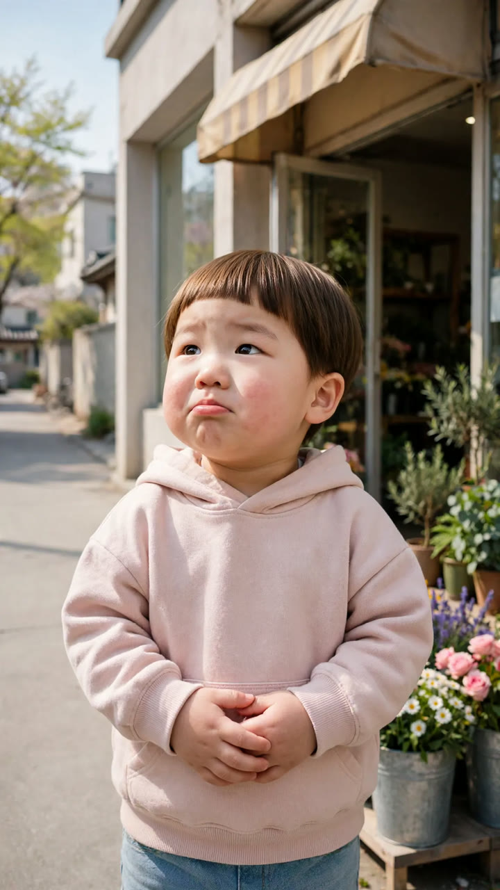
추천 A — 둘 다 좋음 · A가 조금 더 수줍은 얼굴
8번 · 이모 «이모만 줄 거야? 엄마는?»
A ⭐
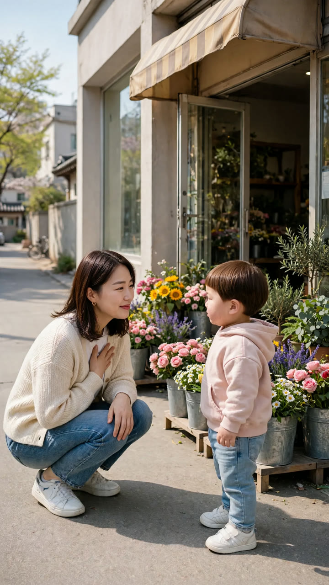
B
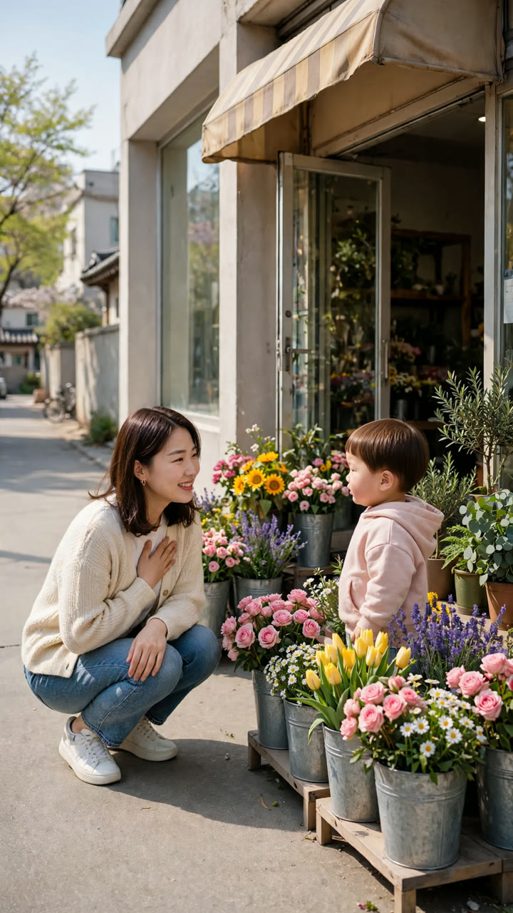
추천 A — A가 두 사람 거리·표정이 또렷
9번 · 도윤 «엄마한테는 비밀이야~»
A
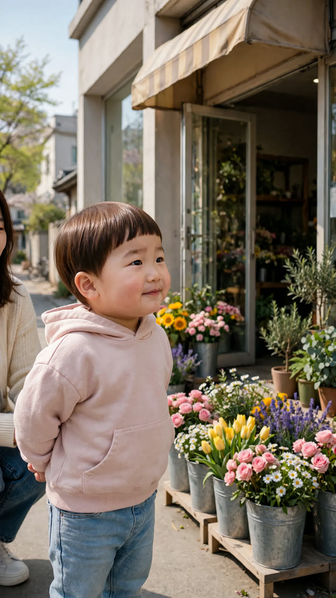
B ⭐
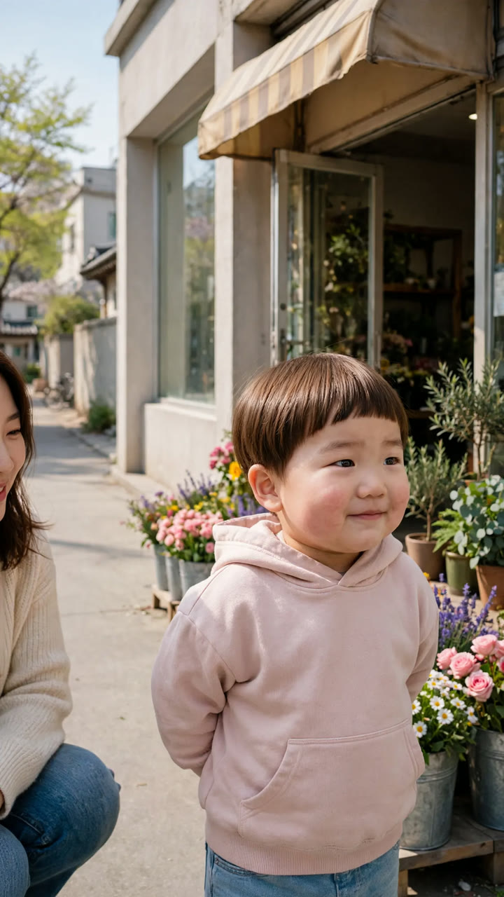
추천 B — B는 카메라를 보며 씩 웃음(펀치라인)